1 引言
在谢林模型中，有一片方形区域，区域又被均匀分成若干小方格；有一群被称为代理的个体，每个代理居住在一个小方格内。这些代理可以分成若干类，所有代理都希望周边8个格子尽可能住有较多的同类代理，若居住区域不满足代理的居住要求，则该代理会搬到另一区域居住。
如图1-1所示，在5×5的区域内有13名代理，不同的颜色表示不同的代理类型。整个区域还存在着一些无人居住的空白方格，代理们可以搬到这些空白方格去居住。
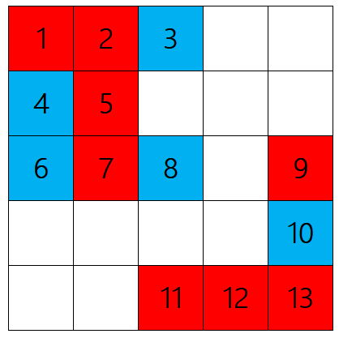
假设代理5希望自己周围8格内同类代理的数量至少比异类代理的数量多2，则该代理会搬到如下图所示的位置。
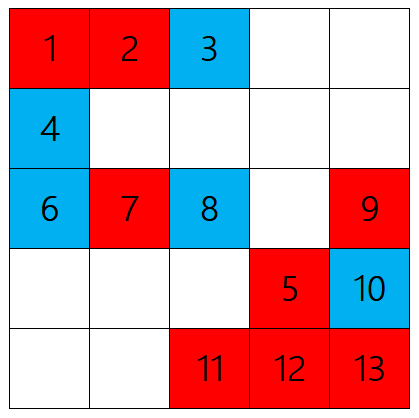
假如代理1也有同样的诉求，那么在图1-1中他的居住要求是能得到满足的。而在图1-2中，由于代理5搬走，代理1的居住要求不再被满足，此时他也会想搬走。当一个代理搬走时，一方面会使得该代理周边同类代理的居住满意度下降，另一方面也会留下空白方格，从而允许其它类型的代理搬入。由此不难推出，这是一种级联现象，微观上单个代理的行为有可能引发整个群体的连锁反应，从而导致宏观上各类型代理在居住分布上的同类大片连续、异类相互隔离的现象。
参考文献[1]和[2]指出，在确定初始状态、确定各类代理居住要求、区域拥有足够多空白方格的情况下，代理的移动顺序和搬迁策略(如条件搬离、随机搬离)对于最终产生隔离与否没有实质性的影响，极限状态总是稳定的。
本文余下部分将通过程序模拟谢林模型的运作，对谢林模型进行验证和一些简单的探究。
2 模拟验证
设置一片500×500的区域。设区域中居住有两类代理，每类代理各有100000个，初始时随机分布。设两类代理的居住要求都是周边8各中有至少4名同类代理。使用计算机程序进行模拟迭代，每次迭代时，按随机顺序判断每个代理的居住要求是否得到满足，不满足者搬往随机空白方格，程序模拟运行结果如下：
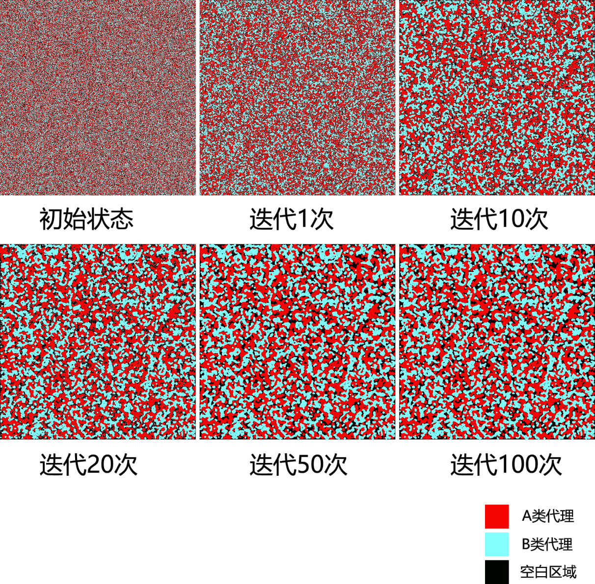
可以看到，在迭代20次后，整个区域就基本稳定下来。
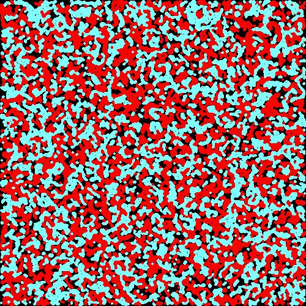
二十万个代理，只需20次迭代就可以从随机混沌的状态演变成同类聚居、异类隔离的格局，由此可见同质性的强大威力。观察稳态的图片不难发现，在不同类的同质块间存在着真空区域，将不同类代理聚居区域隔离开来。
改变模型参数，取20×20的区域，设置两类各15000名代理，设每个代理要求周边有至少5名同类代理，则可以得到如下结果：
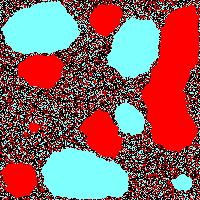
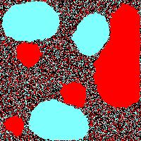
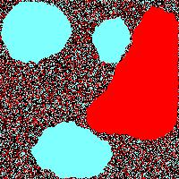
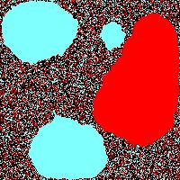
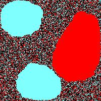
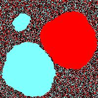
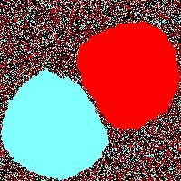
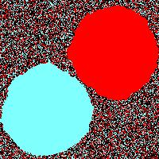
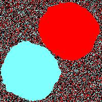
在增强了居住要求之后，同类聚集区域变大了许多，隔离现象也变得非常明显。观察迭代过程不难发现，一开始时会存在多个小聚居区，后来这些小聚居区会逐渐合并成一个大的区域，最终只剩下每类代理各一个超大聚居区。由于居住要求过强，小聚居区边缘出的代理的居住要求往往得不到满足，因此这些代理会向外搬离，并级联地带动聚居区内部的代理也向外搬离，最终汇聚到一个大聚居区中，这很好的验证了谢林模型的迁移连锁效应。不过，同样也是因为居住要求过强，大聚居区边缘区域处于动态平衡状态，模拟过程将会无法收敛，聚居区的大小也存在上界。
如图2-12所示，在同样条件的另一组实验中，有一类代理的两个大聚居区没有合并成更大的聚居区。这是因为这两个聚居区大小几乎相同，在随机搬迁模式下，两个区域边缘处的代理相互交换数量未能使得两者的代理数量失衡，于是两者的大小都基本保持不变。
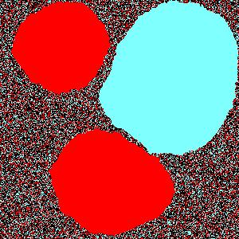
3 隔离发生的条件和程度
取300×300的区域，设两类代理各35000名，设两类代理的居住要求皆为周边8格内有x名同类代理。当x取不同的值时，稳态情况如下：
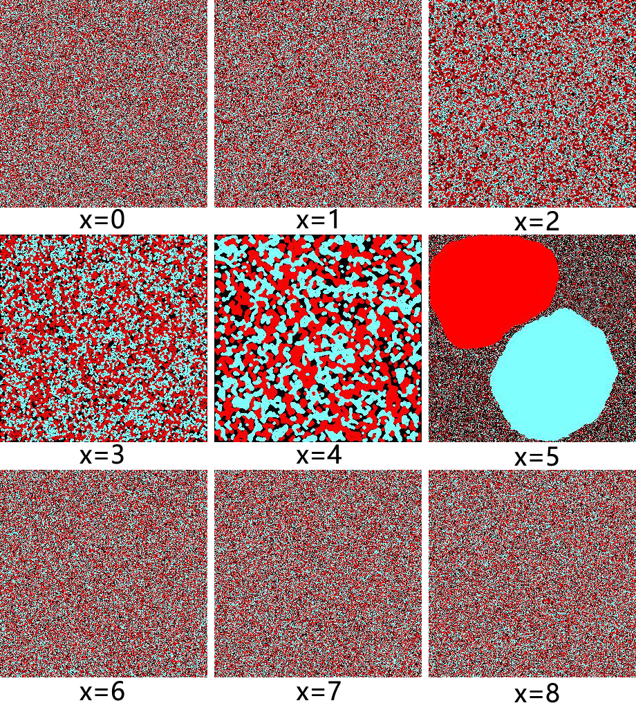
显然在x取0、1时不发生隔离，在x取2时有很轻微的局部隔离，在x取3时有不明显的隔离，在x取4时有明显的隔离，在x取5时有非常明显的聚集和隔离，在x大于或等于6时不发生隔离。显然，当x过小时，几乎所有代理都满足现状，同质性无法积累导致不发生隔离；而当x过大时，几乎所有代理的居住要求都无法得到满足，由于无法定居而不发生隔离。总之，在要求同类代理占周边8格的约50%时，可以观察到隔离现象。
改变居住要求，设两类代理的居住要求皆为周边8格内同类代理比异类代理多x名。当x取不同的值时，程序模拟得到的稳态情况如下：
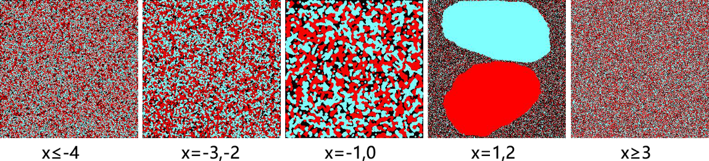
由此可见，在考虑两类的相对关系而非同类的绝对数量时，稳态下代理分布的模式同样是这几种。在[-3,2]区间内，x的每两个取值对应一种程度的隔离，x取值不在此区间内时不发生隔离。
在以上两种居住条件下，在x的绝对值较大时的稳态是一种无法收敛的动态平衡；而在x的绝对值较小时的稳态容易出现聚居区内部有空白格子的情况。
另外，上述的只是一般情况。在x比较大时，未必就不会发生隔离。在多次模拟后发现，有小概率在迭代次数很高时突然出现一个某类代理的小聚居区，并以滚雪球之势迅速成长为一个大聚居区。一旦某类代理出现了聚集现象，在多次迭代后其它类型的代理也会更容易出现聚集。
4 三类代理的情况
在生成三类代理的情况下，谢林模型依旧有效，但不能像二类模型那样在要求严格时产生大聚居区。在三类代理的情况下，采用上一节的两种居住要求(同类绝对数量或两类相对数量)，一旦发生隔离，稳态结果更容易收敛，隔离现象也更加明显，示例结果见图：
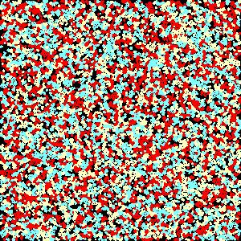
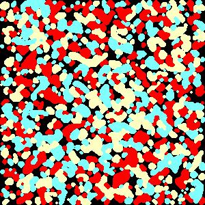
5 考量周边15格时的情况
上文所探讨的都是每个代理考察自己周边3×3小区域内8格状态时的情况，实际上若扩大每个代理的考察范围，谢林模型依旧可以有效运作。考量周边4×4范围内的15格，以周边同类代理绝对数量到达x为居住要求，x不同取值时两类代理和三类代理的各种稳态分布如下：
| x | 两类代理 | 三类代理 |
|---|---|---|
| 2 | 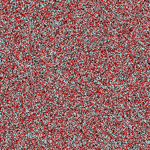 | 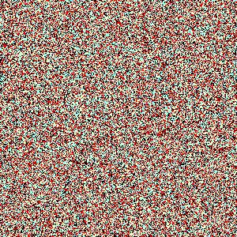 |
| 3 | 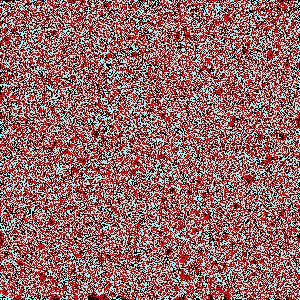 | 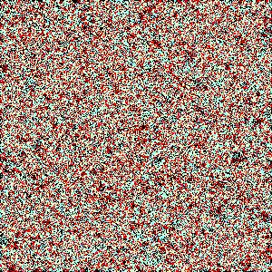 |
| 4 | 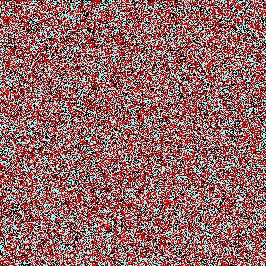 | 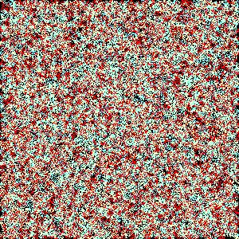 |
| 5 | 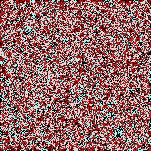 | 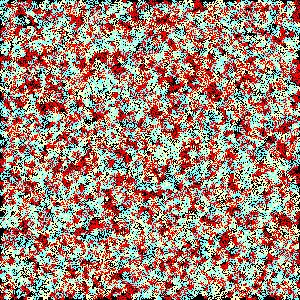 |
| 6 | 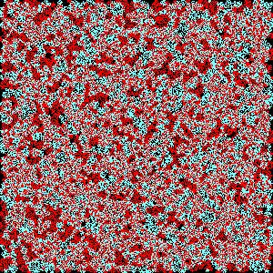 | 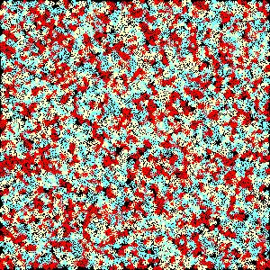 |
| 7 | 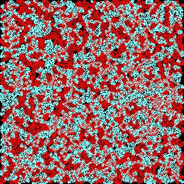 | 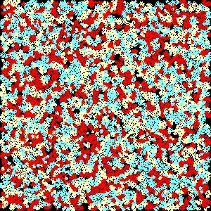 |
| 8 | 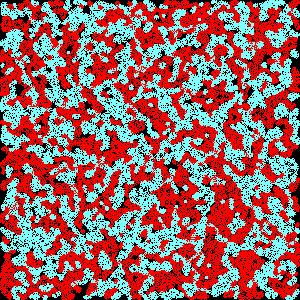 | 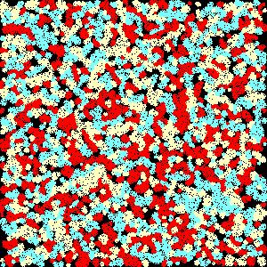 |
| 9 | 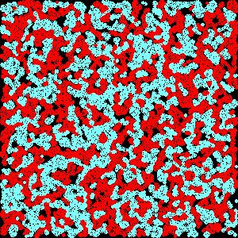 | 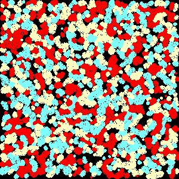 |
| 10 | 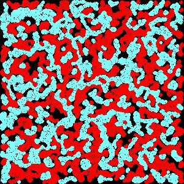 | 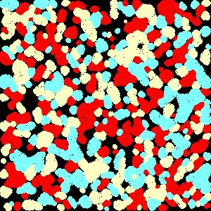 |
| 11 | 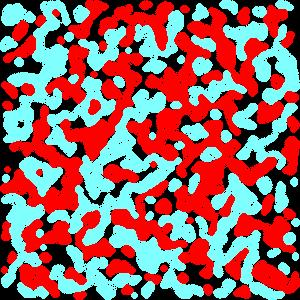 | 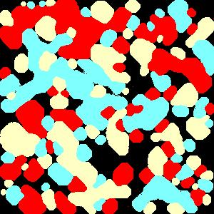 |
| 12 | 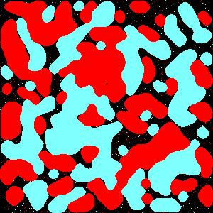 | 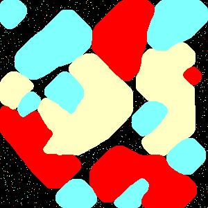 |
| 13 | 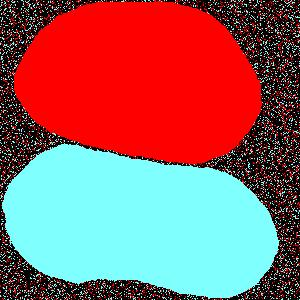 | 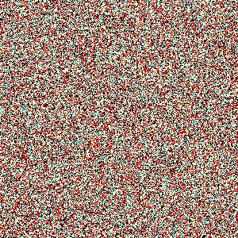 大概率 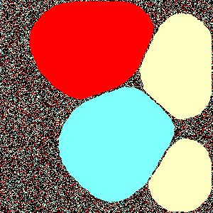 小概率 |
| 14 | 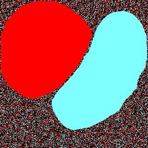 | 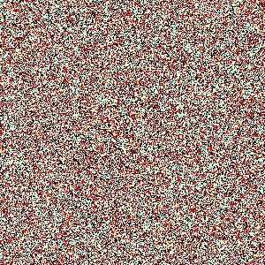 |
| 15 | 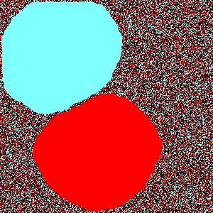 | 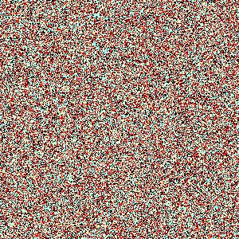 |
| 16 | 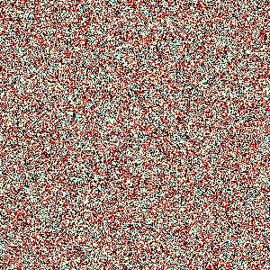 |
不难发现，考量周围15格时，比考量周围8格更容易出现隔离现象。
6 综合分析
“物以类聚，人以群分。”谢林模型很好地描述了同质性对社会空间隔离的作用和影响。即使人们选择杂居，也总是会存在一些局部的聚居现象。经过一段时间之后，较小的聚集体很可能会合并成更大的聚集体。个体的行为，往往会级联地带动整个群体的行为，谢林模型的动态变化过程很清晰地反映了这一现象。隔离的发生是无组织的，每个代理只考虑自己的喜好，最终却形成了整体上的隔离。在发生隔离并达到稳态时，代理的几何分布有交叉丝带状和相切类圆状两种，前者一般是静态平衡，后者往往是动态平衡。
7 结束语
本文利用计算机程序验证了谢林模型的正确性，并对其特点进行了一定的挖掘。程序模拟并不能算是一种严谨的研究方法，但确实是非常有效的辅助手段，我们可以借助程序模拟来获取一些结论，再进行严谨的理论推导。[1]在前人的基础上总结和改良了对谢林模型的数学描述，可以借助其数学模型进行更深入和严谨的定量研究。
本文只使用了随机搬迁策略，没有对就近满意搬迁、高分搬迁等其它搬迁方式进行探究。另外，若各类代理采用不同的居住要求，或让已对居住环境满意的代理以较小的概率搬迁，又或者是给每类代理再分出小类，都可能取得不同的结果。代理的一些个人属性可以作为分类依据，包括静态属性(如种族)和动态属性(如年收入)。若使每类代理也可以同时有多种居住要求，当每种居住要求已得到或未得到满足时，代理以不同的概率、采取不同的策略进行搬迁，将可以更加贴近现实情况。
本文没有对达到稳态所需的迭代次数和代理的搬迁次数进行探究。如何设计一种机制或搬迁策略，能让达到稳态时所有代理的搬迁次数总和最小，亦即取得最小的社会代价，也是一个可行的研究方向。
另外，可以引入进化博弈论、概率论、网络动力学等理论，进行交叉性的研究。
8 参考文献
- [1] 谢燕娜. Schelling居住隔离模型[D].首都师范大学,2007.
- [2] （美）David EasleY著. 网络、群体与市场——揭示高度互联世界的行为原理与效应机制. 李晓明等译. 北京：清华大学出版社,2011.
- [3] Schelling T C . Models of Segregation.[J]. American Economic Review, 1969, 59(2):488-493.
- [4] Schelling T C . Dynamic Models of Segregation[J]. Journal of Mathematical Sociology, 1971, 1(2):143-186.